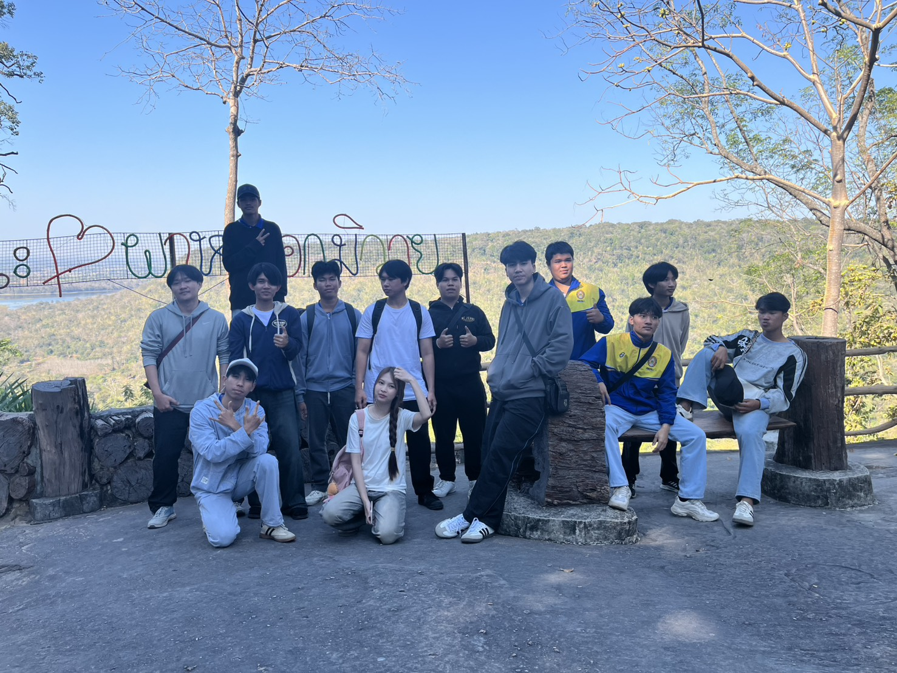
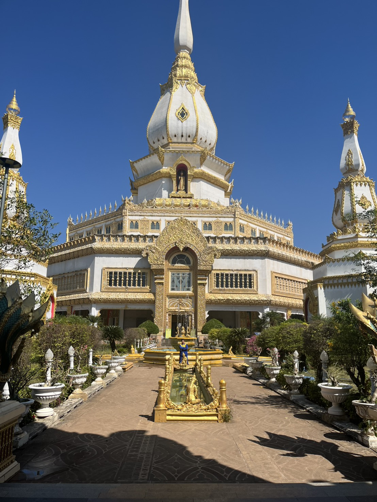

ผาหมอกมิวาย เป็นจุดชมวิวธรรมชาติที่สวยงาม เหมาะสำหรับชมทะเลหมอกในช่วงเช้า บรรยากาศเย็นสบาย มองเห็นวิวภูเขาสลับซับซ้อน เป็นสถานที่ท่องเที่ยวที่เหมาะกับการมาพักผ่อน และถ่ายรูปกับกลุ่มเพื่อน

พระมหาเจดีย์ชัยมงคล ตั้งอยู่ที่วัดผาน้ำทิพย์เทพประสิทธิ์วนาราม จังหวัดร้อยเอ็ด
พระมหาเจดีย์ชัยมงคล มีความสูงประมาณ 101 เมตร
ภายในวัดมีพระพุทธรูปประดิษฐานอยู่จำนวนหลายร้อยองค์
พระมหาเจดีย์ชัยมงคล ใช้งบประมาณก่อสร้างมากกว่า 3,000 ล้านบาท จากแรงศรัทธาของพุทธศาสนิกชน
เริ่มก่อสร้างเมื่อปี พ.ศ. 2531
สร้างขึ้นโดยพระครูวิบูลย์ธรรมาภรณ์ (หลวงปู่ศรี มหาวีโร)
เป็นเจดีย์ขนาดใหญ่ สีขาวตัดทอง ผสมผสานศิลปะไทยภาคกลางและอีสาน
ภายในบรรจุพระบรมสารีริกธาตุ และเป็นศูนย์รวมศรัทธาของพุทธศาสนิกชน